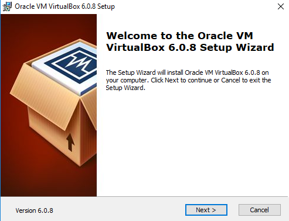
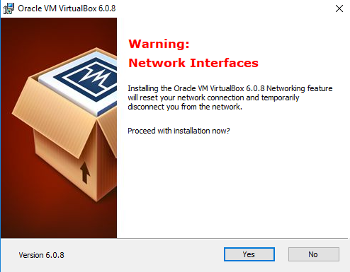
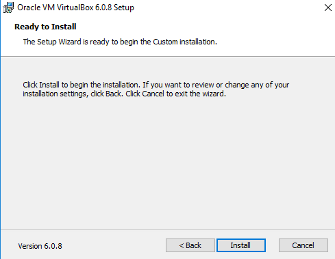

La verdad es que muy simple, solo tienes que buscar VirtualBox en google y encontraras la pagina offical del programa. Aunque en estos casos para facilitarte la instalacion, solo as click aqui
Ya dentro de la pagina selecciona el sistema operativo en el cual que vas a virtualizar. En nuestro tutorial estaremos usando Windows como el sistema operativo en donde virutalizaremos, descargaremos este.
Al abrir instalador, nos encontraremos con las siguientes pantallas, en las cuales le daremos a siguiente:
En esta pantalla puedes seleccionar que no te cree un icono en el escritorio si lo deseas, el resto de las opciones (Como que cree la entrada en el menu inicio y que asocie las extenciones de archivo) las recomendamos que las dejen activadas.
Se que puede alarmante esta pentalla pero lo unico que nos pregunta si queremos instalar los drivers de red. Esto le decimos que si ya que de esta forma podremos acceder a internet desde nuestra maquina virtual.

Aqui es cuando se completa la instalacion de VirtualBox. Si queremos iniciar el programa cuando salimos del instalador le dejamos el tilde activado, si no lo desactivado.
Y ahora lo unico que queda es instalar Windows o Linux en la maquina virtual